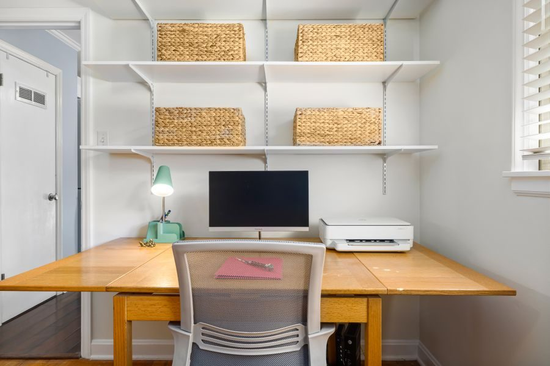

El mejor barato
Vale si imprimes cuatro cosas al año y quieres gastar lo mínimo hoy. Si acabas imprimiendo todas las semanas, te va a salir cara por la tinta.
Ver precio actual en AmazonPrecio de hoy, en Amazon. Enlace de afiliado.

| Velocidad ISO | Hasta 7,5 páginas por minuto en negro y 5,5 en color |
|---|---|
| Velocidad en borrador | Hasta 20 por minuto en negro y 16 en color |
| Resolución | Hasta 1.200 x 1.200 ppp en negro · hasta 4.800 x 1.200 optimizados en color |
| Funciones | Imprimir, escanear y copiar |
| Escáner | De sobremesa, hasta 1.200 ppp ópticos |
| Bandejas | 60 hojas de entrada y 25 de salida |
| Volumen | HP recomienda de 50 a 100 páginas al mes · máximo 1.000 |
| Conexión | Wifi 802.11 a/b/g/n · Bluetooth 4.2 · USB 2.0 |
| Cartuchos | HP 305 negro (unas 120 páginas) y tricolor (unas 100) · hay versiones XL |
| Medidas y peso | 425 x 304 x 154 mm · 3,42 kg |
Datos de la ficha oficial del fabricante (hp.com — DeskJet 2720e, especificaciones de producto), consultada el 2026-09-06. No publicamos ningún dato que no podamos comprobar ahí.
No ponemos precios porque cambian cada día. Lo ves actualizado al entrar.
¿Comparándolo con otros? En la guía de qué impresora comprar: el precio de la caja no es lo que vas a pagar están las cuatro opciones de la categoría: la mejor, dos de gama media y la mejor barata.